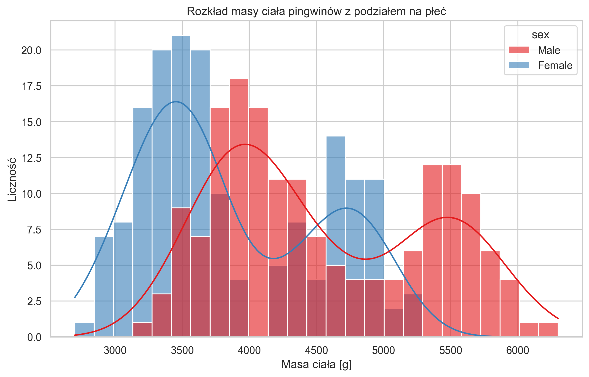
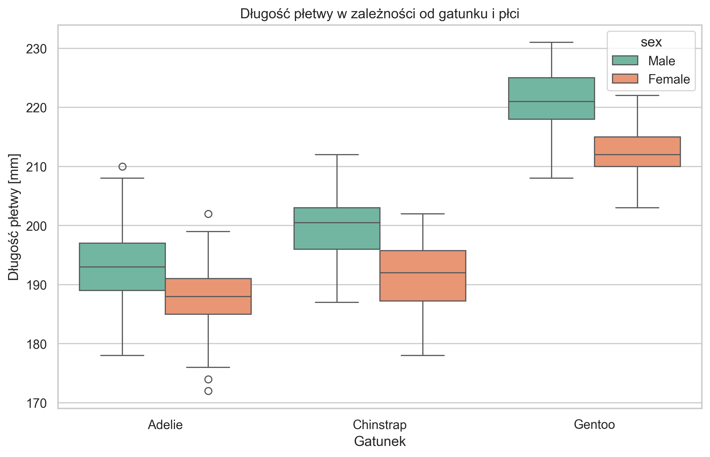
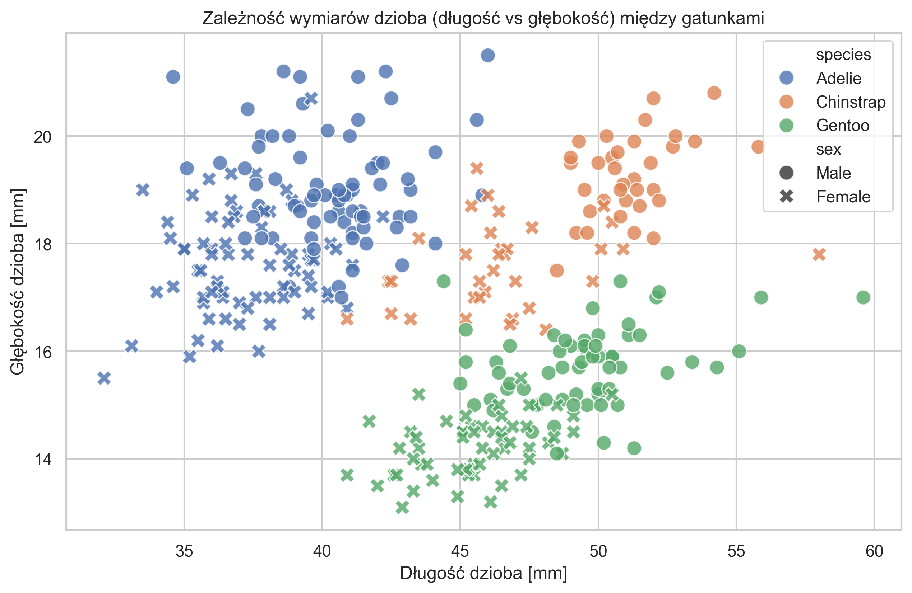

Zbiór danych Palmer Penguins zyskał dużą popularność jako nowoczesna, doskonała alternatywa dla klasycznego zbioru Iris. Został on zebrany i udostępniony przez dr Kristen Gorman oraz stację badawczą Palmer Station, Antarktyda (w ramach Long Term Ecological Research Network).
Zbiór pozwala na szczegółową analizę relacji cech fizycznych pingwinów uwzględniając podział na płeć i gatunek. Na drodze wstępnego sprawdzenia, usunięto z niego wiersze z brakami danych (metodą dropna), aby uniknąć błędów agregacji.
Opis poszczególnych badanych cech (zmiennych):
Gatunek (species) - zmienna grupująca przypisująca pingwina do jednego z trzech gatunków: Adelie, Chinstrap, Gentoo.
Płeć (sex) - zmienna grupująca: male (samiec), female (samica). Zmienna ta jest wprost powiązana z naturalnym dymorfizmem płciowym badanej grupy.
Wyspa (island) - Biscoe, Dream, Torgersen (miejsce na archipelagu Palmera, gdzie badano dany osobniki).
Masa ciała (body_mass_g) - waga danego osobnika obserwowana w gramach.
Wymiary fizyczne – zmienne podane w milimetrach:
flipper_length_mm - długość płetwy.
bill_length_mm - długość dzioba.
bill_depth_mm - głębokość (grubość) dzioba.
Do wczytania, odpowiedniego wyczyszczenia danych z braków, oraz ich grupowego przetworzenia wykorzystano środowisko Python oraz dedykowane, popularne moduły deweloperskie i analityczne:
pandas – fundamentalny pakiet pozwalający wczytać zbiór jako DataFrame, a także dokonać agregacji korzystając z potężnej metody okienkowej groupby() (wyliczenie wariantów w grupie) ze wsparciem statystycznego describe().
matplotlib.pyplot oraz seaborn – połączone bilbioteki do precyzyjnej wizualizacji. Wykorzystano m.in. zautomatyzowane metody nakładania na siebie różnokolorowych grup dla typowych statystycznych dystrybucji z wykorzystaniem obiektów: histogramu (histplot), wykresu dyspersyjnego (scatterplot) oraz klasycznego pudełko-wąsy (boxplot).
Podstawą tego badania było potraktowanie masy ciała (body_mass_g) jako zmiennej zależnej, natomiast dla analizy porównawczej uwzględniono tu koniunkcję dwóch kluczowych zmiennych grupujących (cechach jakościowych): płci (sex) oraz gatunku (species).
Poniższa tabela dowodzi uśrednionych statystyk oraz wartości dyspersyjnych przygotowanych wprost z wykonanego programu.
Tabela: Statystyki sumaryczne dla Masy Ciała w gramach.
| Gatunek (species) | Płeć (sex) | Liczebność całkowita | Średnia masa (mean) | Mediana (median) | Odch. stand. (std) |
|---|---|---|---|---|---|
| Adelie | Female | 73 | 3368.84 | 3400.0 | 269.38 |
| Adelie | Male | 73 | 4043.49 | 4000.0 | 346.81 |
| Chinstrap | Female | 34 | 3527.21 | 3550.0 | 285.33 |
| Chinstrap | Male | 34 | 3938.97 | 3950.0 | 362.14 |
| Gentoo | Female | 58 | 4679.74 | 4700.0 | 281.58 |
| Gentoo | Male | 61 | 5484.84 | 5500.0 | 313.16 |
Przedstawiono wizualizacje ilustrujące i sprawdzające kluczowe rozkłady wg zmiennych grupujących. Poniższe wykresy dostarczają nie tylko statystycznego dowodu na powiązania płci, ale również pomagają zweryfikować badawczą klasyfikację różnych gatunków.

Wykres typu "Boxplot" badający przedziały (kwartyle) dla długości płetwy potwierdza zbieżne różnice dla wielkości grup pingwinów, będąc dodatkowo skorelowanym z masą ciała (patrz: Gentoo).

Korelacja dwóch numerycznych zmiennych z zastosowanym rzutowaniem na klaster grupy.

Analiza podziału biomechanicznego połączonych i zgrupowanych czynnikowo pingwinów pozwala sprecyzować bardzo wyraźne i łatwe do oceny konkluzje naukowe:
Widoczny dymalizm płciowy: Statystyki uzyskane dla populacji bezsprzecznie udowadniają, iż niezależnie od gatunku, samce z tych samych grup (males) są znacząco cięższe ("różnica płci" wynosi średnio koło 500g-800g przewagi na korzyść samca) oraz cechują się wyraźnie dłuższymi płetwami w porównaniu z samicami. Co więcej, histogram dowodzi, że jest to zjawisko zbiegające do pewnych rozkładów normalnych spiętrzonych dla badanych grup osobno.
Cechy gatunku nadpisywane przez płeć: Widać drastyczną przewagę wielkości fizjologicznych osobnika Gentoo. Nawet samice z grupy Gentoo są na ogół zauważalnie cięższe, a ich płetwy są dłuższe (mediana to ok. 210~215 mm) niż wskaźniki najcięższych w stawce i dobrze zbudowanych samców z grup Adelie i Chinstrap.
Bardzo silne zgrupowania klastrowe wymiarów dzioba (Scatter Plot): Korelacja wymiarów dzioba jest świetnym predykatem i bardzo trafną zmienną klasyfikującą konkretny przypadek biologiczny. Jak wynika z wykresu rozrzutu, pomiar zaledwie dwóch uwarunkowań - długości oraz głębokości (grubości) dzioba - powoduje tworzenie się trzech idealnie wyszarpanych naturalnych wysepek (klastrów), które bezpośrednio odpowiadają konkretnemu rodzajowi pingwina. Taki dowód jednoznacznie wspiera tworzenie algorytmów sztucznej inteligencji, w których na podstawie cech dzioba bezbłędnie klasyfikuje się te odrębne na archipelagu grupy bez konieczności badania genetycznego zwierzęcia.